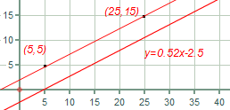
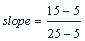
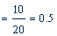
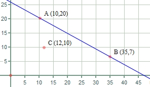
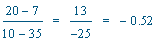

When two straight lines are plotted on the coordinate plane, we can tell if they are parallel from the slope, of each line. If the slopes are the same then the lines are parallel. In the figure above, there are two lines that are determined by given points. Drag any point to reposition the lines and note that they are parallel only when the slopes are equal.
The slope can be found using any method that is convenient to you:

In Fig 1 there are two lines. One line is defined by two points at (5,5) and (25,15). The other is defined by an equation in slope-intercept form form y = 0.52x - 2.5. We are to decide if they are parallel.
For the top line, the slope is found using the coordinates of the two points that define the line. (See Slope of a Line for instructions).


For the lower line, the slope is taken directly from the formula. Recall that the slope intercept formula is y = mx + b, where m is the slope. So looking at the formula we see that the slope is 0.52.
So, the top one has a slope of 0.5, the lower slope is 0.52, which are not equal. Therefore, the lines are not parallel. The lines are very close to being parallel, and may look parallel, but appearance can deceive.

We first find the slope of the line AB using the same method as in the example above.

For the line to be parallel to AB it will have the same slope, and will pass through a given point, C(12,10). We therefore have enough information to define the line by its equation in point-slope form form:
In the interest of clarity in the applet above, the coordinates are rounded off to integers and the lengths rounded to one decimal place. This can cause calculatioons to be slightly off.
For more see Teaching Notes